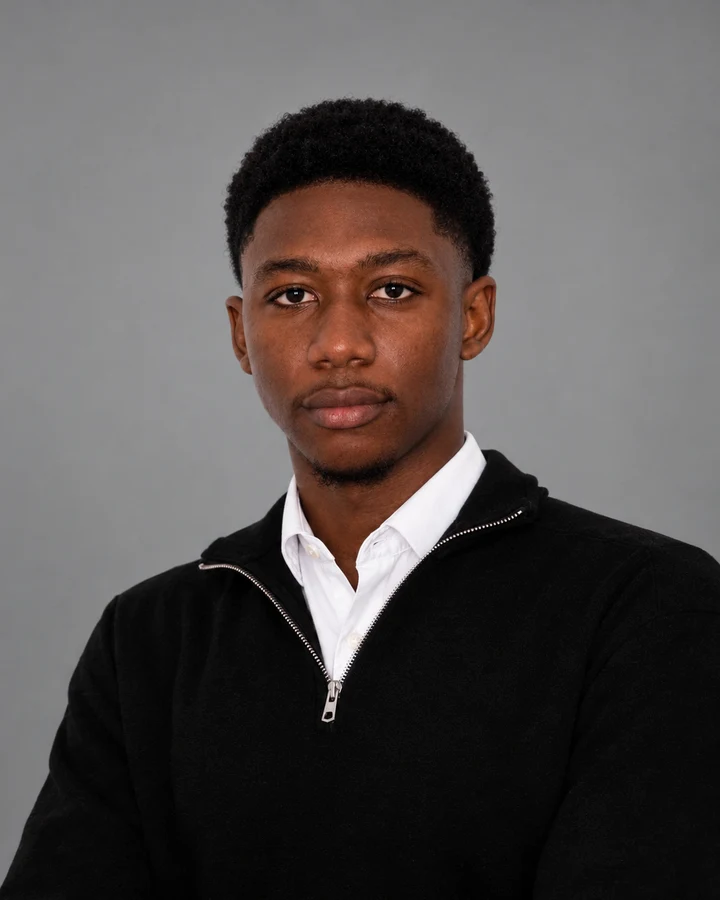

Réseaux · Sécurité · Télécommunications
Mohamed Djoncounda Sissoko
Élève ingénieur à IMT Atlantique en informatique, réseaux et télécommunications, en alternance chez Orange Business comme ingénieur avant-vente WAN. Je conçois des architectures réseau et je m'oriente vers la sécurité réseau.
Aussi disponible : CV en anglais

Les plus récentes
Dernières réalisations
Registre 2026 → 2021
Réalisations
Formation et compétences
Parcours
| Années | Diplôme |
|---|---|
| 2025 – 2028 | Diplôme d'ingénieur, IMT AtlantiqueInformatique, réseaux et télécommunications, en apprentissage · Brest |
| 2023 – 2025 | BUT Réseaux et TélécommunicationsParcours cybersécurité · IUT de Lannion |
| 2022 – 2023 | DUT Électronique et maintenance informatiqueMention assez bien · Technolab-ISTA, Bamako |
| 2020 – 2021 | Baccalauréat technique, génie électroniqueMention assez bien · Lycée technique de Bamako |
- Réseaux
- WAN, Cisco (routage, commutation, VLAN), OSPF, NAT/PAT, QoS, DNS, DHCP, Active Directory, RADIUS
- Sécurité
- VPN IPsec, HTTPS/TLS, SSH par clé, FTPS, DNSSEC, pare-feux Stormshield, ACL, tests d'intrusion, audit de vulnérabilités, Kali Linux, Metasploit, Wireshark
- Télécoms
- Modulation et démodulation, conception RF sous ADS, LoRaWAN et LR-FHSS, radio logicielle (HackRF, SDRangel)
- Développement
- Python, C, Java, JavaScript (Three.js, WebGPU), PHP, SQL, HTML/CSS
- Certification
- MOOC SecNumacadémie de l'ANSSI
- Langues
- Français, anglais
En dehors du travail
Centres d'intérêt
Hacking éthique
Je résous des challenges sur Root-Me pour pratiquer l'attaque et la défense en dehors des cours.
Sport
Running, badminton, tennis et musculation.
Cuisine
Cuisiner et partager des repas.
Voyages
J'ai vécu et étudié ou travaillé au Mali, en France, au Canada et au Royaume-Uni.
Contact
Échangeons sur un stage, une alternance ou un projet réseau.
Le plus simple est de m'écrire ou de me contacter sur LinkedIn.
mohameddsissoko@outlook.fr
Aussi disponible : CV en anglais